1027
|
PbCrO4
|
s2
|
|
Pb(IO3)2
|
4s3
|
|
PbClF
|
s3
|
|
Pb3(AsO4)2
|
108s5
|
1028 1.
> 2. > 3. < 4.
> 5. <
1029 由于CdCO3的溶解度较大,H2CO3的Ka2很小,设以HCO3-为主
CdCO3 + H2O===Cd2+ + HCO3-+
OH-
Ksp・Kw
K= ──────
Ka2
10-11.28-14
= ──────
10-10.25
= 10-15.03
s = K1/3
= 10-15.03/3 = 10-5.01 (mol/L) 即pH9.0, 此时以HCO3-为主,以上假设合理,结果正确
1030
[Pb2+] = [SO42-]
+ [HSO4-] = 2.0×10-4 mol/L,
 = 1+10-2+2=2
= 1+10-2+2=2
2.0×10-4
[SO42-] = ────── = 1.0×10-4
(mol/L)
2
Ksp =
[Pb2+][SO42-] = 2.0×10-4×10-4 = 2.0×10-8
1031 aF(H) = 1 + 10-1.00+3.18 = 102.18
K'sp =Ksp・(aF(H))2= 10-10.57+2×2.18
= 10-6.21
K'sp 10-6.21
s
= [Ca2+] = ─── = ─────
c2(F) 10-2.00
= 10-4.21
= 6.2×10-5 (mol/L)
1032
0.80×10-6
未沉淀的[Ca2+] = ───────×1000 = 2.0×10-7(mol/L)
100×40.08
10-1.22-4.19
x(C2O42-)
= ────────────────
10-4.7×2+10-4.7-1.22+10-1.22-4.19
= 0.76
Ksp 2.0×10-9
[C2O42-] = ──── = ────── = 1.0×10-2
(mol/L)
[Ca2+] 2.0×10-7
[C2O42-]
1.0×10-2
则c(H2C2O4) = ────── = ───── = 1.3×10-2(mol/L)
x(C2O42-)
0.76
1033 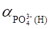
=1+10-8.00+12.36+10-16.00+19.56
+10-24.00+21.68 = 104.42
s
[PO43-] = ───── = 10-4.42s
[H+] 10-8.00
x(NH4+)=
───── = ──────── =10-0.023
[H+]+Ka 10-8.00+10-9.26
[NH4+]
= cx(NH4+) = 0.2×0.95 = 0.19 = 10-0.72
[Mg2+]= s
s×10-0.72×10-4.42s =10-12.7
s =10-3.78
(mol/L)
1034 [Ca2+] = s
c(H2C3O4) = 0.050 mol/L
5.9×10-2×6.4×10-5.0
x2=
────────────────────────── = 0.86
(10-5.0)2+5.9×10-2×10-5.0+5.9×10-2×6.4×10-5.0
[C2O42-]
= 0.050×0.87 =
0.043 (mol/L)
[Ca2+][C2O42-]
=s×0.043 =
2.0×10-9
s = 4.7×10-8 (mol/L)
1035 s = [Ag+]
+ [AgCl] + [AgCl2]
= [Ag+]
+b1[Cl-][Ag+] +b2[Cl-]2[Ag+]
= [Ag+](1+b1[Cl-]] +b2[Cl-]2)
=Ksp(1/[Cl-]
+b1+b2[Cl-])
当[Cl-] = 0.10 mol/L 时
1
s
= 1.8×10-10(── + 1.1×103+ 1.1×105×0.10) = 2.2×10-6 (mol/L)
0.10
1036
10-8.00
aL(H) = 1 + ────── = 102.00
1.0×10-10
cL 0.10
[L] = ──── = ──── = 10-3.00
(mol/L)
aL(H) 102.00
aAg(L) = 1 + 103.0×10-3.00 + 107.0×10-6.00 = 12
cAg+
s2
[Ag+][Cl-] = ─────・[Cl-] = ──── = Ksp
aAg(L)
aAg(L)
s = ( Ksp×aAg(L))1/2 = (1.8×10-10×12 )1/2 = 4.6×10-5(mol/L)
1037 (1) 在pH = 2.0 时
aCaY = 1+[Y]KCaY
10-2.0
= 1+ ────×1010.69»1
1013.51
EDTA不影响CaF2↓的生成
(2) [Ca2+][F-]2=
2.7×10-11
c・Ka
0.10×6.6×10-4
[F-]= x(F-)×c(HF) = ───── = ─────────
[H+] +Ka 0.01
+ 6.6×10-4
= 6.2×10-3
(mol/L)
[Ca2+][F-]2=
0.10×(6.2×10-3)2 =
3.8×10-6
> 2.7×10-11
有CaF2沉淀生成
1038 K’sp
=Ksp・aS(H)・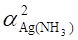
[H+] [H+]2
aS(H) = 1 + ──── + ────
= 104.45
Ka1 Ka1Ka2
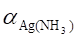
= 1 + [NH3] b1+ [NH3]2b2 = 105.65
∴K’sp = 10-48.7+4.45+2×5.65 = 10-32.95
s = (K'sp/4)1/3
= 6.5×10-12
(mol/L)
m = 6.5×10-12×0.100×248 = 1.6×10-10 (g)
1039
0.10mol/L氨水中,[OH-]= (Kbc)1/2=
(10-4.74-1.0)1/2 = 10-2.87
≈ 10-2.9
mol/L
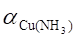
=1+10-1.0+4.3
+10-2.0+8.0 +10-3.0+11.0 +10-4.0+13.3 +10-5.0+12.9
= 109.3
aCu(OH) = 1 + 10-2.9+6.0 = 103.1
aCu≈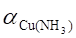
=109.3
K¢sp =Ksp・aCu=10-18.6+9.3 = 10-9.3
K¢sp
10-9.3
s
= ──── = ────── = 10-3.5 = 3.2×10-4 (mol/L)
[OH-]2 10-2.9×2
1040 0.1 mol/L Na2C2O4溶液的pH:
[OH-] = ( Kwc/Ka2)1/2
= (10-14.0-1.0/10-4.2 )1/2
= 10-5.4(mol/L) pH = 8.6
aS(H) = 1 + 10-8.6+14.2 + 10-17.2+21.1=105.6
[C2O42-]≈0.10 mol/L (pH≥pKa2)
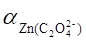
=1+10-1.0+4.9+10-2.0+7.6+10-3.0+8.2
= 105.7
K’sp =Ksp・・aS(H) = s2
s= (Ksp・aZn・aS(H))1/2 = (10-21.7+5.7+5.6)1/2
= 10-5.2
= 6.3×10-6
(mol/L)
1041 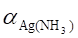
=1+102.27-1.00+104.61-2.00+107.01-3.00+109.06-4.00
= 105.1 >> aZn(OH)
aZn = 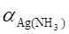
= 105.1
10-10 10-20
aS(H) = 1 + ────── +──────── = 104.15
10-14.15 10-14.15-6.88
K’sp(ZnS)=Ksp(ZnS)・aZn・as
= 10-21.7+5.1+4.15 = 10-12.4
s = [K’sp(ZnS)]1/2
=(10-12.4)1/2= 10-6.2= 6.3×10-7(mol/L)
1042
1.1×10-10
欲使BaSO4不沉淀 [Ba2+] < ─────── =1.1×10-6 (mol/L)
1.0×10-4
c(Ba2+) c(Ba2+)・aY(H)
10-1.0・aY(H)
[Ba2+]= ──── = ───────── = ──────── < 1.1×10-6(mol/L)
a Ba(Y)
[Y’]KBaY (0.11-0.1)107.8
1.1×10-6.0-2.0+7.8
aY(H) < ────────── = 100.8
10-1.0
pH >9.5
x y
0.1043×21.11
─── + ──── = ────────
58.44
102.9 1000
143.3 187.8
x×──── + y×───── = 0.4020
58.44 102.9
0.0153
故w(NaCl)= ─────×100% = 4.08%
0.3750
0.2000
w(NaBr)= ─────×100% = 53.33%
0.3750
1044
150×3.9％
150×9.6％
n(NaCl)=
────── ≈0.10(mol), n(AgCl)= ────── ≈ 0.10(mol)
58.44
143.3
当用1 L氨水溶解后: [Cl-] =
0.20 mol/L [Ag’]=0.10 mol/L
K’sp Ksp・
[Ag’]=──── = ─────────
= 0.10(mol/L)
[Cl-]
[Cl-]
[Ag’]・[Cl-]
0.10×0.20
= ────── = ─────── = 108.05
Ksp
1.8×10-10
= 1 + [NH3]b1+ [NH3]2b2≈ [NH3]2b2
[NH3]=
(/b1)1/2 = (108.05/107.2 )1/2
= 100.42 = 2.6 (mol/L)
而用于与Ag+络合的NH3的浓度为0.20 (mol/L)
c(NH3)
= 2.6 + 0.2 = 2.8 (mol/L)
1045 =1+103.24×0.50+107.05×(0.50)2
= 2.8×106
c(Ag+)
s2
[Ag+][Cl-] = ─────・[Cl-] = ────── = Ksp
s
= (Ksp・)1/2= ( 1.8×10-10×2.8×106 )1/2
= 0.0224
(mol/L)
s
[Ag+]= ──────
0.0224
故 [Ag+] = ────── = 8.0 ×10-9
(mol/L)
2.8×106
1046 (1)已知混合溶液中c(Ag+) = 0.010 mol/L, c(Cl-)=
0.010 mol/L
为了不使AgCl沉淀生成,混合溶液中Ag+的游离浓度为:
2.0×10-10
[Ag+] ≤ ──────── = 2.0×10-8
(mol/L)
0.010
c(Ag+)
0.010
= ────── = ────── = 5.0×105
[Ag+] 2.0×10-8
b1可忽略, ≈ b2[NH3]2
5.0×105 = 1.0×107×[NH3]2
[NH3]=
(5.0×105/1.0×107)1/2=
0.22 (mol/L)
(2)混合溶液中所需NH3的总浓度为
c(NH3)=
[NH3] + 2[Ag(NH3)2+]= 0.22+2×0.010=0.24(mol/L)
1057 (B)
1058 Zn2+,
Ca2+
1059
△
CO(NH2)2 + H2O ===== CO2↑ + 2NH3
随加热反应逐渐进行, NH3浓度均匀增加,[C2O42-]随之增大,过饱和度小,故颗粒大。
1060 1.
A 2.
B 3. C
1061 使大部分吸附于沉淀表面的杂质解吸,转移至溶液中。
1062 氧化
S ───→ SO42-
; 稀、慢、搅、热、陈化、酸化; 慢速定量滤纸
Mr(S)
BaCl2 ; 水 , 洗至滤液不含Cl-; ──────
Mr(BaSO4)
1063 低
2Mr(Fe3O4)
因3 mol Fe2O3 2 mol Fe3O4
, 而 ───── < 1
2 mol Fe3O4
, 而 ───── < 1
3Mr(Fe2O3)
1064 偏低
, 不受影响
1065 无影响;
偏低。
偏低;
偏高
1066 (1) 偏低;
(2) 偏低
1067 (1) 无影响
(2) 偏低
(3) 偏高
1068 (C)
1069 (C)
1070 (C)
1071 (D)
1072 6.20
4.75 3.30
1073
11.54 4.30
1074 偏低
;
偏低
1075
D B
A C
1076
|
方法
|
莫尔法
|
佛尔哈德法
|
|
指示剂
|
K2CrO4
|
铁铵矾
|
|
适用酸度
|
中性或弱碱
|
强酸
|
1077
|
HNO3
|
NH4SCN
(KSCN)
|
酸性
|
铁铵矾
白色→粉红
|
1078
|
AgNO3
|
中性至弱碱性
用NaOH中和至甲基红变黄
|
K2CrO4
黄色→砖红色
|
1079 佛尔哈德法 返滴定
AgNO3 硫酸铁铵
HNO3
NH4SCN
1080
|
AgNO3直接滴定
|
加稀HNO3, 加热赶H2S,
调pH至近中性
|
K2CrO4
黄→砖红
|
1:1
|
|
AgNO3及KSCN
返滴定
|
酸性(HNO3), 硝基苯
|
铁铵钒
白→粉红
|
1:1
|
两者选一。
1081 (1) AgNO3,
Na2SO4,中和至弱碱性, K2CrO4 ,
(cV)AgNO3Mr(BaCl2・2H2O)
w(BaCl2・2H2O) = ──────────────
×100%
m试样×2
(2) NH4SCN,
AgNO3, 硝基苯, HNO3介质 , Fe3+ ,
[(cV)AgNO3-(cV)NH4SCN]Mr(BaCl2・2H2O)
w(BaCl2・2H2O)= ──────────────────×100%
m试样×2
两者选一。
1082
(0.1180×33.85)×197.8/6
w(As2O3)
= ──────────────× 100%
0.2000×1000
= 65.84 %
1083
0.5000 0.1000×23.36
───── = ──────── Mr(KIOx)=
214.0
Mr(KIOx)
1000
Mr(Ox) = 214.0 - 39.10 - 126.9 =
48.0
x = 3 即 KIO3
1084 设KBrO3 为 x mmol
x + 5x
+ 0.1010×3.25 =
0.1010×10.51
x = 0.1222
0.1222×167.0×4
w(KBrO3)=
────────── ×100% = 8.16%
1.000×1000
(5×0.1222+0.1010×3.25)×119.0×4
w(KBr) = ───────────────────×100% = 44.71%
1.000×1000
3001 沉淀的溶解度要小,损失量≤0.2mg;
沉淀要纯净,易于过滤和洗涤;
沉淀易转变为称量形式
3002 组成必须固定,且与化学式完全符合;
称量形式的性质要稳定;
称量形式的摩尔质量要大
3003 Al(C9H6NO)3
0.5mg, 0.05mg
3004 按天平精度称量沉淀至少应m=(0.2×10-3/0.1)×100=0.2(g)
试样质量m=(0.2×1/5×100)/10=0.4(g)
3005 据反应S→SO42-→BaSO4需BaCl2与S的物质的量之比为1:1,故
V(BaCl2)=1.5×6%×1000/(32×1)=2.8(mL) 2.8+2.8×50%=4.2(mL)
3006
Ar(S) 100
M
= 0.5×─────×──
=0.34(g)
Mr(BaSO4) 20
3007 0.6994
3008 第一试样 w(Pb)=24.02%×100/(100-1.56)=24.40%
第二试样 w(Pb)=24.26%×100/(100-0.58)=24.40%
3009 设AgCl为x(g), AgBr为y(g). x+y
=1.000
x×Ar(Ag)/Mr(AgCl)+y×Ar(Ag)/Mr(AgBr)=0.6635
两式联立，解得:x=0.4986g; y=0.5014g
w(Br)=[0.5014×Ar(Br)/Mr(AgBr)]×100%=21.34%
w(Cl)=[0.4986×Ar(Cl)/Mr(AgCl)]×100%=12.33%
3010
[Ar(Ag)/Ar(Cl)]×m(Cl)+m(Br)´ Ar(Ag)/Ar(Br)
w(Ag)=
───────────────────────×100%=65.67%
[Mr(AgCl)/Ar(Cl)]×m(Cl)+m(Br)´Mr(AgBr)/Ar(Br)
m(Cl):m(Br)=1:2
3011 c(HCl)=0.3000×1000/(143.32×20.00)=0.1047(mol/L)
3012 设NaCl为x g, NaBr为y g
x/58.44+y/102.9=0.1048×26.48/1000
x×143.32/58.44+y×187.78/102.9=0.4482
两式联立，解得x=0.09575g; y=0.1169g
w(NaCl)=[0.09575/0.6000]×100%=15.96%
w(NaBr)=[0.1169/0.6000]×100%=19.48%
3013 53.14
w(Fe)=52.69%×100/(100-0.84)=53.14%
3014 灰分为8.99% 硫为1.41% 挥发物为19.73%
3015 w(干试样灰分)=6.32%×100/(100-2.88)=6.51%
3016 (A)
3017 (C)
3018 0.2mg
3019 盐效应的存在
3020 增大,
因为随Cl-浓度增大,会生成AgCl2-、AgCl32-等络离子,从而增大其溶解度
3021 _______ ________
s =√KspaA(H) 或s =√Ksp/x(A-)
3022 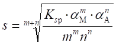
3023 3.0×10-3
mol/L 2.0×10-3 mol/L
3025 因pH=7.0
aS(H)=1+10-7.0+12.9+10-14.0+20.0=106.3
_________
________
s =√Ksp×aS(H)
= √10-35.2+6.3 = 10-14.5(mol/L)
3026 生成CaC2O4的量是0.25×60%/Mr(CaCO3)=1.5×10-3(mol);
损失量≤1.5×10-3×0.01%=1.5×10-7(mol);
洗涤液中[Ca2+]=1.5×10-7/0.1=1.5×10-6(mol/L);
[C2O42-]≥Ksp/[Ca2+]=2.3×10-9/1.5×10-6=1.5×10-3(mol/L)
3027 [OH-]=1.1×10-2mol/L
pOH=1.96 pH=12.04
3028 [C2O42-]=5×10-4×x(C2O42-)=5×10-4×10-3.61=10-6.91(mol/L)
[Ca2+][C2O42-]=10-3.30×10-6.91=10-10.21<10-8.64.故不生成沉淀
3029 纯水中[H+]=10-7mol/L
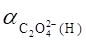
= 1+b1[H+]+b2[H+]2≈1 s =
(Ksp)1/2
pH=8.0 [H+]=10-8mol/L
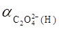
=1+b1[H+]+b2[H+]2≈1 s =
(Ksp)1/2
s = 4.8×10-5(mol/L), 溶解度相同
3030 [Cl-]=0.1mol/L,
s = Ksp/[Cl-](1+b1[Cl-]+b2[Cl-]2)=2.2×10-6(mol/L)
[Cl-]=1mol/L,
s = Ksp/[Cl-](1+b1[Cl-]+b2[Cl-]2)=2.0×10-5(mol/L)
3031 纯水: s = (Ksp)1/2=10-4.99
[Y]=[Y']/aY(H)=10-2/1010.8=10-12.8(mol/L),
aBa(Y)=1+KBaY[Y]=1+107.6×10-12.8≈1
pH=3.0; s =
(Ksp)1/2=10-4.99
它们之间无差异,因为溶液的酸性强,
Ba2+ 不与EDTA络合
3032 Ba2+能与EDTA生成较稳定的络合物,或者说钡离子产生络合效应。
3033 (C)
3034 (C)
3035 (A)
3036 晶形,无定形,凝乳状;凝乳状;晶形;无定形
3037 当一种难溶性物质从溶液中析出时, 溶液中某些可溶性杂质被沉淀带下来而混杂于沉淀之中,这种现象称为共沉淀。
3038 当沉淀与母液一起放置, 溶液中某些可溶性杂质离子在该沉淀表面上继续析出沉淀的现象。
3039 吸留发生在沉淀内部,吸附发生在沉淀表面;
吸留有选择性,包夹无选择性
3040 杂质离子与构晶离子的半径相近,晶体结构相似,
BaSO4-KMnO4
3041 NO3-
因为吸附层优先吸附Ba2+,而Ba(NO3)2的溶解度最小,所以吸附NO3-
3042 NO3-
H+
3043
- + - 0
3044 稀溶液,热,沉淀剂缓慢加入,不断搅拌,陈化
3045 沉淀与母液一起放置一段时间的过程
晶体完整化以及小晶粒溶解,大晶粒长大使沉淀变得更加纯净
3046 浓,热溶液,加入适量电解质,不必陈化
3047 沉淀剂不是以构晶离子形式直接加入, 而是通过溶液中的化学反应使构晶离子缓慢地、均匀地产生,从而使沉淀缓慢地均匀地形成。 能获得紧密的大颗粒沉淀。
3048 沉淀的初速度=K(Q-S)/S,相对过饱和度越大,沉淀的初速度快,晶核生成得多,得到的是小颗粒,反之(Q-S)/S小,易得到大颗粒。因此晶形沉淀条件的关键是保证(Q-S)/S小,稀与慢加及搅动都是控制Q小。
3049 沉淀完毕之后,加一定量热水稀释,充分搅拌,使表面吸附杂质转移到溶液中去。
3050 用冷水洗涤沉淀时,外双电层中带电荷离子被洗掉,使AgCl颗粒带相同电荷,互相排斥,使之均匀分散,故产生胶溶现象,应当选电解质溶液洗。
3051 由于沉淀剂的浓度大,使相对过饱和度大,此时均相成核为主,造成了大量的晶核,因沉淀颗粒太小,故穿透滤纸。
3052 过饱和溶液中的构晶离子自发地形成晶核的过程;过饱和度较大时均相成核为主,生成大量的晶核,只能得到颗粒细小的沉淀。
3053 得到的沉淀颗粒大,表面吸附杂质少,易过滤洗涤
例1:硫代乙酰胺水解生成H2S,沉淀硫化物
△
CH3CSNH2+H2O====CH3CONH2+H2S
M2++S2-====MS↓
例2:尿素水解生成NH3,中和溶液中的H+,使CaC2O4均匀沉淀
△
CO(NH2)2+H2O====CO2+2NH3
Ca2++C2O42-+H+====CaC2O4↓
H+ + NH3====NH4+
3054 莫尔法
佛尔哈德法
法扬司法
AgNO3
NH4SCN AgNO3
K2CrO4
Fe3+ 吸附指示剂
3055 AgNO3
, K2CrO4, 6.5～10.5,
6.5～7.2
3056 6.5～7.2 ,偏高,
因为pH10时,氨大部分以NH3形式存在,会生成Ag(NH3)2+络离子,难以确定终点。
3057 Ag2CrO4不易形成,不能确定终点, 生成褐色Ag2O,不能进行测定
3058 指示剂CrO42-与Ba2+生成BaCrO4↓ 。
加入Na2CO3生成BaCO3沉淀掩蔽Ba2+ 。
3059 NH4SCN或KSCN;铁铵矾;酸性;由无色变为红色。
3060 酸性, 若在中性介质中则指示剂Fe3+水解生成Fe(OH)3,影响终点观察
3061 返滴定; 硝基苯或二氯乙烷, AgCl + SCN- =
AgSCN ↓+ Cl-,
低
3062 偏低。
无影响
3063 吸附指示剂,
与指示剂的pKa有关
3064 曙红或荧光黄;
荧光黄
3065 佛尔哈德法,
在酸性条件下可消除上述离子的干扰
3066 [1.2×10-2×194.2]/10≈0.23(g)
V=100×0.23/5≈4.7(mL)
3067 用莫尔法测定Cl-采用直接法测定,终点是砖红色Ag2CrO4沉淀出现,很明显。若用此法直接测定Ag+,由于加入指示剂后即有Ag2CrO4生成,终点附近Ag2CrO4转化为AgCl很慢,难以准确测定,因此若必用莫尔法测Ag+,应先加入过量NaCl标准溶液,再用AgNO3标准溶液返滴滤液中过量的Cl-。
3068 不能,因为加入指示剂后即生成Ag2CrO4砖红色沉淀。Ag2CrO4
沉淀全部转为AgCl,反应较慢,无法确定终点。
3069 用AgNO3为滴定剂,K2CrO4为指示剂,因为s(AgCl)<<s(Ag2CrO4), 利用分步沉淀原理,首先生成AgCl沉淀,Ag2CrO4红色沉淀后生成,表明Cl-定量沉淀指示终点到达。
3070 因AgCl的溶解度比AgSCN大,在测Cl-时,加入过量AgNO3生成AgCl沉淀后应把AgCl过滤或加入硝基苯保护AgCl,使终点时AgCl不转化为AgSCN。而AgBr、AgI的溶解度比AgSCN更小,故不必过滤或保护。
3071
137.3+32.06
(0.5021-0.5013)×──────
16.00×4
w(BaS)=
──────────────×100%=0.42%
0.5013
3072 电解质, 糊精, 吸附指示剂银量法
3073 (C)
3074 (B)
3075 减小1单位; 不变; 增大1单位
5001 AgNO3， 铁铵矾
5002 (C)
5003 (C)
5004 (1) 在1mol/L [NH3]的条件下，求[Ag(NH3)2+]/[Ag+][NH3]2=b2, [Ag+]=10-8.05(mol/L)
(2) [Ag+][I-]=10-8.05×0.1=10-9.05>Ksp(AgI)
故能产生沉淀
(3) c(Ag+)
= [Ag+]+[AgI]+[AgI2-]+[AgI32-]
= [Ag+](1+b1[I-]+b2[I-]2+b3[I-]3)
= Ksp/[I-](1+b1[I-]+b2[I-]2+b3[I-]3)
= 9.3×10-17/0.1×（106.58×10-1+1011.74×10-2+1013.68×10-3）
= 5.0×10-5(mol/L)
5005
水洗
损失量
m =10-4.32×0.2×128.1=1.23(mg)
草酸铵洗 S =10-8.64/10-2=10-6.64 (mol/L)
损失量 m =10-6.64×0.2×128.1=0.0059(mg)
5006 设水的质量分数为x1, x2
24.02×1/(1－x1)=24.40
x1=1.56%
24.26×1/(1－x2)=24.40
x2=0.57%
5007
设氯代乙烷为x g, 溴代乙烷为y g
w(氯代乙烷) =
57.50% w(溴代乙烷) = 42.50%
5008 均相成核；异相成核；异相；大
5009 设溶解度为x
(x)(2x)2 = 4.00×10-6 x = 0.0100 mol/L
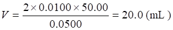
5010沉淀的溶解度小，品种多，选择性好。
(1) 沉淀的极性小，对杂质离子吸附弱，沉淀纯净。
(2) 组成恒定，一般不必灼烧烘干后即可称量，简化操作。
5011无定型；电解质水溶液。
5012在饱和溶液中MA分子或离子对的浓度在一定温度时为一定值，用S0表示，称微溶化合物的固有溶解度。
5013 0.5 mg；5×10-4 mg。
5014 (D)
5015 (C)
5016 (B)
5017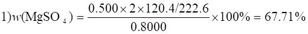
2)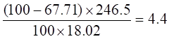
与分子式不符，失去2.6个结晶水。
5018设n(Na2SO4)为x, n(H2O)为y
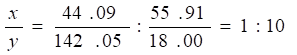
该化合物为Na2SO4×10H2O
5019
设n(P)为x, n(O)为y
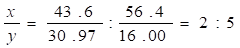
化学式为P2O5
5020
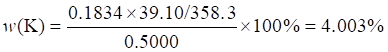
5021 8.44
5022 (C)
5023 a Ag(NH3) = 2.5×105
a S(H) = 1.4×105
Ksp¢ = Ksp×a2Ag(NH3)×aS(H) = 1.8×10-34
(3)
4S2(S+0.1)
= K¢sp
S = 2.1×10-17
(3)
5024
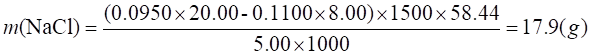
5025
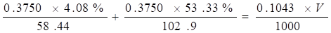
V = 21.14(mL)
5026 (B)
5027
5028 (A)
5029 (0.5020-0.5020×0.5%)+0.5020×0.5%×233.4/169.4 = 0.5029(g)
5030 设需3mol/L NH3×H2O V mL
[Ag¢] = [Cl-] =
[NH3]
= 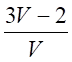
K¢sp = Ksp×aAg(NH3) = Kspb2[NH3]2
即（）2 =1.8×10-10×107..05×()2
解得
V ＝ 8mL
5031 jq(Ag2CrO4/Ag)
= jq(Ag+/Ag)+0.059/2×lgKsp
Ksp = 1.1×10-12
S = (Ksp/4)1/3 = 6.5×10-5(mol/L)
[Ag+]
= 2S = 1.3×10-4(mol/L)